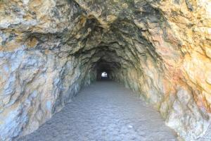

Haunted San Francisco
History and locations of SF's finest ghouls
By Christopher Robison
October 26, 2023

San Francisco has earned a reputation as a world-class haunted city. With it’s beginnings as a gold rush town through today’s technology boom, The City’s tumultuous past has lured many tortured souls to remain. This is my personal list of haunted or spooky places in San Francisco that you don’t usually see in other lists. This list is by no means exhaustive, just some places and stories I have found to be spooky and interesting.
-

The tunnel/cave carved into the rockface at the former location of the Sutro Baths at Lands End is rumored to have any number of ghosts, demons or sea creatures that leave large claw marks scratched into the rock. There is also an urban legend that if you take a lit candle to the northern end of the tunnel, an unseen force will take the candle and launch it into the surf below.
Address: 11004 Point Lobos Ave -
Between 1899 and 1908 a large number of bodies that were apparent suicides were discovered in Sutro Forest. It is said that many of these tortured souls can be seen wandering the grounds wearing Victorian dress on foggy, moonlit nights.
Address: 1155 Johnstone Dr Broderick/Terry Dual, Lake Merced
 Photo of David C. Broderick
Photo of David C. BroderickSenator David C. Broderick was an ambitious political climber and an outspoken abolitionist in the Democratic Party. His buddy, California Chief Justice David S. Terry (who was known for getting into fights and shanking people), on the other hand, was a staunch supporter of slavery and advocated for its extension into California. When Terry lost re-election in 1859, he blamed Broderick for engineering the loss and challenged him to a duel on the edge of Lake Merced with the idea that whoever was left standing would win the argument of whether or not California should have slavery.
 Sketch of the Broderick-Terry Duel
Sketch of the Broderick-Terry DuelBoth pistols had hair triggers, but it was Broderick’s that accidentally discharged prior to the final count. You only get one shot in a duel so Broderick just had to stand there while Terry took careful aim at him and fired, hitting him in his lung. Broderick was alive but his wound was fatel. He was taken back to the home of his friend Leonidas Haskell, where he languished, struggling to breath, coughing up blood, in pain for three days until he finally died from a fit of coughing on his own blood.
This event became known as the “Last Duel in California,” or the “Last Notable American Dual”. Broderick would become a martyr for the anti-slavery movement. Both the location of the dual near Lake Merced and the Haskell House are said to be haunted by shadowy figures flashing lights and tipping plants over.
Address: 11100 Lake Merced Blvd-
 Photo of Mary Ellen Pleasen
Photo of Mary Ellen PleasenMary Ellen Pleasant was a former slave and indentured servant who came to San Francisco in 1899. She eventually opened up a restaurant and was notorious for clandestinely picking up stock tips from the wealthy businessmen who ate there. She was so savvy that she used these tips to make herself rich, eventually designing and building a gorgeous mansion on Octavia Street. She lived there with her "business partner" and his wife. Things got a little scandalous when Pleasant was accused of pushing her business partner down the stairs and killing him. Eventually she was pressured to move out of San Francisco, lost all her savings, and died broke years later. It is said that her spirit haunts her commemorative park on Octavia and Bush St, the former location of her lost mansion. If you stand on her plaque and make a polite request, it will be granted if you show her respect and are a good person. Beware, though, rumor has it that she throws rocks on the heads of people who are without honor and do not show her the proper respect.
Address: 1501 Octavia St -
 1904 Photo of St. Francis Hotel
1904 Photo of St. Francis HotelIt is widely believed that the famous celebrities of Hollywood have been haunting Union Square’s St. Francis Hotel for years. The hotel was the place where the yesteryear actor John Barrymore died in an earthquake that struck San Francisco in the year 1906, as the actor was sleeping in one of the hotel rooms. Another story is about a party that was held in suites 1219 and 1221 by Fatty Arbuckle, a silent-movie comedian. This grand party apparently got out of control, which led to the rape and murder of Virginia Rappe, an American model and silent film actress. Al Jolson, an American singer, comedian, stage and film actor also died in the same suite during a poker game in the year 1950. The hotel staff and hotel guests have reported that they have sensed and felt Barrymore’s, Arbuckle’s and Jolson’s spirits in the hallways of the hotel.
Address: Powell St at Union Square -
The Pinecrest Diner sits on the corner of Mason and Geary. The sign above the door boasts “Best breakfast in San Francisco” and it’s a good little greasy spoon. However, patrons will notice that the breakfast menu has an odd addendum on it: no poached eggs. This seemingly innocuous detail hints at a murder that took place at the diner back in the late 90’s. In 1997, Hashem Zayed, a cook at the Pinecrest, shot and killed a waitress. Rumor has it that earlier that week the waitress, Helen Menicou, had scolded Zayed for making off-menu poached eggs for a customer. According to the story, Zayed was so upset and embarrassed he stayed up all night and returned to work the next morning bedraggled and armed. Zayed never admitted explicitly that the eggs were the cause of his crime, but the restaurant refuses to serve them to this day.
Address: 1401 Geary St -
 1905 Photo of Stow Lake, Golden Gate Park
1905 Photo of Stow Lake, Golden Gate ParkThere are several origin stories concerning the apparition known as the Stow Lake Ghost. Some say she was an absentminded mother wandering Golden Gate Park’s Stow Lake with a baby in a stroller. She became so enthralled in a conversation that the stroller rolled into the lake, at which point the woman panicked and jumped in after her baby, swimming and searching until both mother and child drowned. Another story says she was an unwed teen who jumped into the lake and drowned herself to hide her illicit pregnancy. Either way the legends claim that a white figure of the woman can be seen wandering the lake shore at night. A related myth claims that the nearby Pioneer Woman and Children statue will move its stone face to a different position when the ghost is nearby.
Address: Stow Lake, Golden Gate Park Former President of the USA Warren G. Harding’s Place of Death and Possible Ghost
 Warren G. Harding
Warren G. HardingOfficially, President Warren G. Harding died at the Palace Hotel of a heart attack but legend has it that he actually died at a bar located across the street from the Palace Hotel and was transported back to the hotel via an underground tunnel linking the tavern with the hotel. The reason for the cover-up was that Harding was President right smack dab in the middle of prohibition, even though it was well known that the President liked to imbibe now and again. The bar still exists and is called the “House of Shields” and they have a large portrait of the former President hanging on their walls. Guests staying at the Palace Hotel have reported seeing Harding’s ghost roaming the halls of the hotel.
Address: 12 New Montgomery St-
 Presidio Pet Cemetery
Presidio Pet CemeteryThe final resting place for hundreds of animals owned by families that were stationed at the Presidio, the pet cemetery dates back to the 1950s. According to the National Park Service, there are no official records for the site, meaning it probably began with the families themselves, with authorization from one of the commanding officers.
Address: 1667 McDowell Ave, Presidio -
 Wave Organ
Wave OrganOn a small jetty that extends from behind the Golden Gate Yacht Club at the end of Marina Green, is a “wave organ” that was constructed from stone salvaged from the demolition of Laurel Hill Cemetery in San Francisco. This “instrument” has cement tubes that extend into the water and as the wave push water in and out of these tubes, they create haunting sounds. The structure is dedicated to Frank Oppenheimer (yes, his brother was that Oppenheimer, he also contributed to this project as well as the Exploratorium) as this was his final project before he died. I've been here many times and each time is different but if you go when the tides are coming up you will be graced with the spookiest howling you've ever heard. Almost like the poor tortured souls who's headstones this place is made of are screaming out in confused agony; forever seeking to escape this plane of existence yet trapped on this jetty where the atomic bomb guy built an organ out of their graves. Yep, this place is definitely haunted.
Address: 11 Yacht Rd (walk to end of jetty) -

William Franklin Whittier, a railroad magnate, built this 30-room mansion in 1894 as a gift to his wife. Unfortunately, she was never able to live in it as she died in a carriage accident before it was completed. He died in the home years later of natural causes, and his son Billy, known for being a slacker and very into partying, sold it in the 1930s to the German Reich. It operated as the German Consulate from 1938 to 1941, when it is alleged that it housed German spies. It was seized by the U.S. Alien Property Custodian in 1941 due to WWII, used by the California Historical Society as their headquarters for a short time, and is now a private residence once again. And though one doesn’t necessarily need to begrudge anyone who wants to live in a home with over 30 rooms, just in case one does, they can take satisfaction in knowing that the home has been said to be haunted by all sorts of ghosts. Some say it’s the German spies. Some say it is Billy who haunts the wine cellar, hoping to get his hands on just one more bottle of wine, and perhaps saddest of all, some say they have seen a shadowy figure who is thought to be the ghost of William Whittier, still waiting for his wife to join him in the house she was never able to call home.
Address: 1900 California St Moss Creek Distillery, Moss Creek
Moss Creek is located on the coast a few miles south of San Francisco. According to the ghostly legend of “The Blue Lady” in 1912 a beautiful, young woman met by chance a handsome, dangerous man and fell in love with him. This dapper ladies’ man was reportedly a piano player in the bar. The young woman, who would always dress in blue, was already married to another but her unsuspecting husband never knew of the illicit affair. She made many trips to the restaurant to be with her lover. The beautiful lady in blue was killed while walking on the beach below the restaurant with her lover. The couple were assaulted on the beach where they both sustained serious injuries. The Lady in Blue succumbed to her injuries before help could arrive but her lover ended up surviving. Visitors have reported seeing many telltale signs of the Lady in Blue, from ghostly blue apparitions to swinging lamps and stacked glasses. Some say she is still trying to recapture the romance and excitement of her love affair to this day. The distillery has had many strange occurrences and has even been featured on Unsolved Mysteries and Ghost Hunters.
Address: 1140 Beach Way, Moss Beach, CA